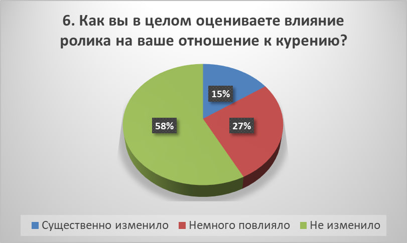

Курение приводит к развитию хронических болезней лёгких,
включая хроническую обструктивную болезнь лёгких (ХОБЛ). Оно также повышает вероятность возникновения онкологических заболеваний, особенно рака лёгких, гортани и ротовой полости.
Пассивное курение также наносит значительный вред здоровью,
увеличивая риск заболеваний дыхательных путей и сердечно-сосудистой системы у некурящих.
По данным ВОЗ, ежегодно от болезней, связанных с курением, умирает более 8 миллионов человек,
из которых около 1,2 миллиона — жертвы пассивного курения.
Отказ от курения приводит к значительным улучшениям в здоровье.
Уже через 20 минут после отказа от сигарет нормализуется сердечный ритм,
а через год риск сердечно-сосудистых заболеваний снижается вдвое.
Через 10 лет вероятность рака лёгких сокращается в два раза по сравнению с курильщиками.
Анкетирование и статистика
В ходе работы над своим проектом я провел опрос среди одноклассников по позапрошлогоднему продукту проекта (видеоролика) на тему
"Влияние видеоролика о вреде никотина для подростков".
Анкета на тему «Влияние видеоролика о вреде никотина для подростков»
1. Смотрели ли вы мой информационный видеоролик о вреде курения?
А) Да
Б) Нет
2. Узнали ли вы что-то новое о вреде никотина из видеоролика?
А) Да
Б) Нет
3. Заставил ли вас ролик задуматься о вреде курения?
А) Да
Б) Нет
4. Планируете ли вы после просмотра ролика отказаться от курения (если курите) или не начинать (если не курите)?
А) Да, отказался(ась) от курения
Б) Да, не начну курить
В) Нет, мое мнение не изменилось
5. Посоветовали бы вы этот видеоролик друзьям?
А) Да
Б) Нет
6. Как вы в целом оцениваете влияние ролика на ваше отношение к курению?
А) Существенно изменило мое мнение
Б) Немного повлияло
В) Не изменило мое мнение
7. Какие вредные вещества, содержащиеся в никотиновых изделиях, вам известны?
А) Только никотин
Б) Никотин и другие вещества (смолы, канцерогены и др.)
В) Не знаю
Увидев результаты анкетирования я провел его анализ. Вы можете посмотреть,
повлиял ли на них поучительный видеоролик о вреде курения и для скольки подростков эта проблема все еще актуальна.

Видео
В этих видео представлена информация о вреде курения, его последствиях для здоровья и жизни подростков.
Также советую ознакомиться с моим видеороликом (первым из списка), который был создан в рамках моего проекта в позапрошлом году с целью повлиять на молодежь и
помочь им осознанно отказаться от никотиновой зависимости. В нем раскрываются реальные факты, последствия для организма.
Надеюсь, что этот материал заставит задуматься и сделать правильный выбор в пользу вашего здорового будущего.
Советы
Бросить курить — это не просто избавиться от привычки, а полностью изменить свой образ жизни.
Важно понять, что никотиновая зависимость затрагивает не только физиологию, но и психику,
поэтому подготовка должна быть всесторонней. Начните с мотивации: найдите вескую причину, ради которой
вы готовы пройти этот путь. Это может быть здоровье, семья, спорт или даже простое желание доказать себе,
что вы сильнее зависимости. Зафиксируйте свою цель письменно, ведите дневник прогресса и отмечайте даже маленькие победы.
Что поможет справиться с тягой к курению:
вместо сигареты выпейте стакан воды, пожуйте жвачку или возьмите в руки что-то, что займёт пальцы. Заменяйте привычку:
Избегайте триггеров: постарайтесь не находиться в компаниях, где курят, и не держите сигареты под рукой.
занимайтесь спортом, больше гуляйте — физическая нагрузка помогает организму быстрее очищаться. Будьте активны:
Используйте техники осознанности: глубокое дыхание, медитация или просто концентрация на ощущениях помогут отвлечься.
расскажите друзьям или семье о своём решении, чтобы они могли вас поддержать. В сложных случаях можно обратиться к специалисту. Обратитесь за поддержкой:
Не сдавайтесь при срывах: даже если вы сорвались, это не значит, что всё потеряно. Просто продолжайте путь и делайте выводы из ошибок.
Главное – помнить, что каждая попытка делает вас ближе к свободе от никотина.